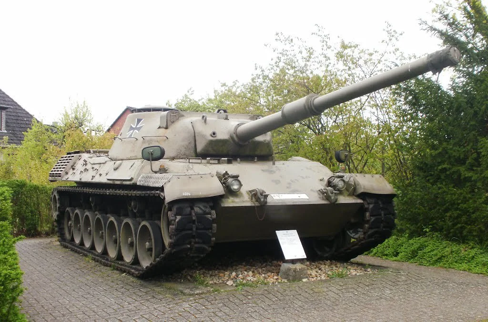

Nationalisation d’entreprises dans l’industrie automobile ainsi que de l’armement, ou bien contraintes pour certaines comme Porsche de tourner une partie de leurs productions vers l’armement et les engins de guerres.
